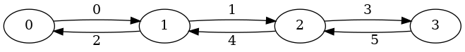

hiperwalk.Line#
- hiperwalk.Line(num_vert, weights=None, multiedges=None)[source]#
Finite line graph (path graph).
- Parameters:
- num_vertint
The number of vertices on the line.
Notes
In the
Lineclass, directions can be assigned to the arcs. An arc pointing to the right has direction 0 (e.g., (1, 2)), and an arc pointing to the left has direction 1 (e.g., (2, 1)).The order of the arcs is determined by their direction. Thus, for a vertex \(v \in V\), the arcs \((v, v + 1)\) and \((v, v - 1)\) have labels \(a_0\) and \(a_1\) respectively, with \(a_0 < a_1\). The only exceptions to this rule are the extreme vertices 0 and \(|V| - 1\), as they have outdegree 1.
Apart from these exceptions, for any two vertices \(v_1 < v_2\), any arc with tail \(v_1\) will have a label smaller than the label of any arc with tail \(v_2\).
For instance, Figure 1 illustrates the labels of the arcs of a path graph with 4 vertices.
Figure 1.#